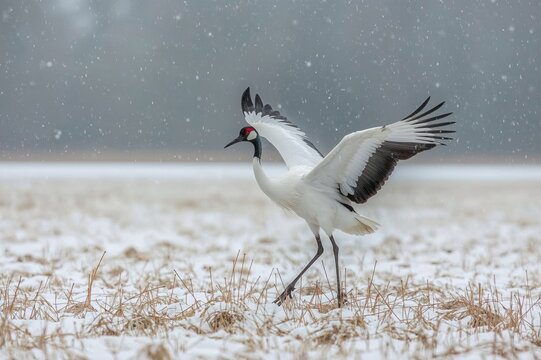

Mike Hoegeman
Tai Chi Notes

Useful links
The notes you find here may be of limited use. They are just prompts
to myself to try and properly do the various postures. From time to
time i will edit them and they may eventually become generally
useful.
You will find the various Peter Chen youtube links very useful though
These postures are for the
basic Tai Chi 24 (posture) Form suite
which is organized into Paragraphs
which are a groups of postures within the 24-posture Form.
Paragraph 1
Peter Chen demonstration of Paragraph 1
Jump points to the individual postures within this Paragraph 1
video are included in each posture note below
Ready Position
Peter Chen demonstration
- start feet together , arms at side
- relax n phases, head to toe
Commencing Form
Peter Chen demonstration
- step sideways left to width of shoulders
- slowly raise arms to shoulder level, palms down
- in continued smooth motion, slowly sink arms to lower waist level,
palms down , fingers pointing up slightly.
- bend knees slightly
Bow step/Part horses mane (3 times)
Peter Chen demonstration
- 3 iterations, Start right to left,
then left to right, then right to left
White crane spreads it's wings
Peter Chen demonstration
... after right sided 3rd rep. of part horses mane)
- Bring right foot up and Make left leg empty and do
Left sided hold the ball keeping left leg empty
- rotate waist left a bit, rotate waist right, shift both hands to right, in front of left shoulder, flattening the ball
- (keep) Left palm down, curving sweep right to left
left hand below shoulder extended to out to left
- (keep) Right palm up, curving sweep left to right
right hand palm facing the right ear (left turn bike signal)
Brush knee, twist & bow step (3 times)
Similar to part horses mane - 3 elaborated bowsteps
Hold fish instead of hold ball
rotate, hold the fish, empty step, brush knee, twist and fill step leg
Peter Chen demonstration
empty step , left leg empty , rotate right
hold fish right hand backhand extended out/away from shoulder
left hand palm down at right shoulder
Strum Lute
- empty left leg , heel down / toe up
- sink down
- raise up
- strum, tip of left upper hand at nose
- strum, tip of right lower hand at left elbow